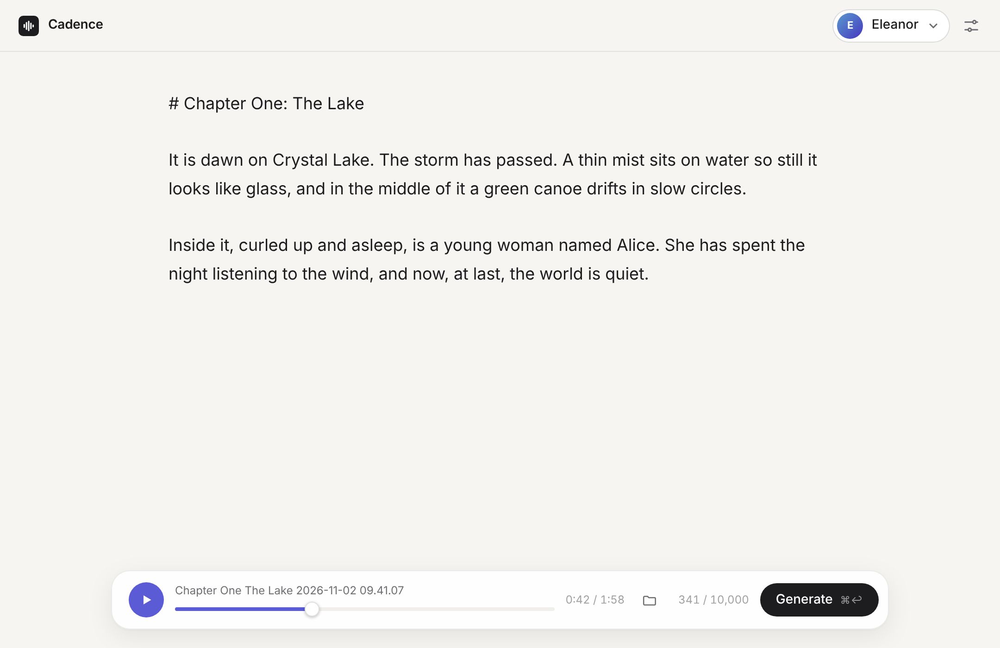

Private by design
Cadence runs entirely on your Mac. Your text and recordings never touch a server, and once it's set up it works offline.
0 bytes uploaded
Cadence turns writing into natural, expressive speech in voices you choose. No subscription, no word limits, and nothing leaves your Mac.

Cadence breathes between sentences, slows for a title and lets a paragraph land. It's the rhythm that makes speech easy to listen to.
No timelines, no tracks, no settings to learn first. If you can type, you can use Cadence.
Up to 10,000 characters at a time, about ten minutes of speech. Text from PDFs and e-books is tidied up for you.
Start with the built-in voices, add one of your own from a minute of recordings, or pick up a voice pack.
Press ⌘↩. Play it straight away; every file is also saved as an MP3, ready to share.
A calm place to write. Your recording plays right in the window, and is saved to your Music folder.
Cadence runs entirely on your Mac. Your text and recordings never touch a server, and once it's set up it works offline.
Speech that takes a breath. You decide how long to pause between sentences, paragraphs and titles.
Add a voice from a minute or two of recordings. It's ready in seconds, with no training.
Chapters, scripts and lessons up to 10,000 characters at a time. Start a line with # and it's read as a title.
Generate as much as you like. There are no credits, character quotas or monthly plans.
Teach Cadence tricky words once with the pronunciation list. It starts with over a hundred that trip up other voices.
Turn on Listen back and Cadence listens to each part as it goes, saying it again if a word comes out wrong.
Broken lines from PDFs are joined up, quotes are fixed, and numbers are read naturally: 1984 becomes "nineteen eighty-four."
Every recording is saved and neatly named in your Music folder, ready for any player, editor or podcast app.
Gently matches the sound of your recordings' microphone and room, so a cloned voice feels at home.
Most voice services charge every month and meter every word. Cadence is yours for the price of a coffee.
| Cadence | Typical cloud voice service | |
|---|---|---|
| Price | $5, once | A monthly subscription |
| How much you can make | Unlimited | Character or credit limits |
| Where your text goes | Nowhere: it stays on your Mac | Uploaded to their servers |
| Works offline | ✓ Yes | No |
| Your own voices | ✓ Included | Often a premium tier |
Grow your cast with voice packs: narrators, presenters, characters and accents, ready to add in seconds.
Any Mac with Apple silicon (M1 or later) running macOS 15 Sequoia or later, with at least 8 GB of memory; 16 GB is recommended. On an 8 GB Mac, the Faster model (in Settings) is the better choice. You'll also need about 10 GB of free space: the app is small, and its speech model downloads once when you first open it.
No. Cadence is a one-time purchase of $5. There are no monthly fees, credits or character limits.
Only the first time, to download the speech model. After that Cadence works completely offline. (The optional Listen back feature downloads its own model the first time you turn it on.)
Yes. Everything happens on your Mac. Your text, your recordings and your voices are never uploaded anywhere.
Yes. Choose Add voice, give it a name and pick a minute or two of clear recordings of one person. It's ready straight away. Only add voices of people who have agreed to it.
Yes. What you make with Cadence is yours to use, including in commercial projects, as long as you have the right to use the voice and the words.
Buy a pack and download it. In Cadence, choose Add voice and select the pack's recordings. Each voice is ready in seconds. See the voice packs.